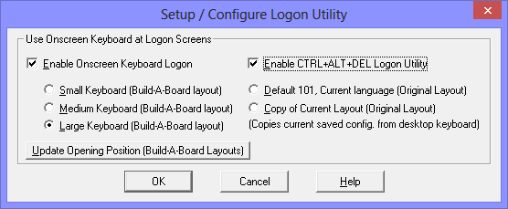
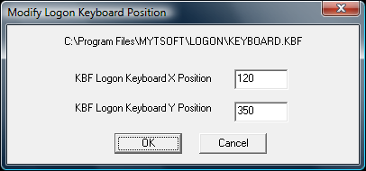

| My-T-Soft®: for Windows; Indestructible Keyboards and Indispensable Utilities; Version 1.80; User's Guide | ||
|---|---|---|
| Prev | Next | |
There is 1 option available - Setup / Configure Logon Utility (My-T-Soft 2 Keyboard Logon)
The My-T-Soft 2 software used which allows customized layouts of the logon keyboard, an the My-T-Soft 2 approach enables the use of a My-T-Soft 2 keyboard during the secure logon sequence. The keyboard can be modified with IMG's "Build-A-Board" (ANSI 2.10 version).

There is 1 section available with 2 options
Use Onscreen Keyboard at Logon Screens
Use Onscreen Keyboard for data entry
When Enable Onscreen Keyboard Logon is checked "On", the default logon options are used, but the My-T-Soft (version 2) keyboard is displayed within the secure logon screens. The keyboard layout may be modified with IMG's "Build-A-Board." See below for options specific to the My-T-Soft 2 Keyboard.
Use Onscreen Keyboard for data entry
My-T-Soft 2 Keyboard options
There are 2 approaches available when My-T-Soft 2 is selected for displaying the keyboard layout (i.e. what the user sees). My-T-Soft 2 is the next generation of the popular My-T-Soft keyboards, and has a more flexible approach to designing and operating keyboard layouts. To address customers who want customized and specialized layouts, My-T-Soft 2 can read Build-A-Board layouts (ANSI 210) along with Original KBF files (layouts for My-T-Mouse, My-T-Touch, My-T-Pen, My-T-Soft and OnScreen).
There are 3 generic Build-A-Board layouts provided - Small Keyboard, Medium Keyboard, and Large Keyboard. Small works well for pen system and Large is better for touchscreens & fingers, but the actual resolution of the display will determine the best choice.
There are also 2 options available for dealing with Original layouts (NOTE: These layouts only display the alphabetic portion of the keyboard). Select Default 101, Current language to use a preset standard 101 keyboard configuration with the currently selected language/layout in My-T-Soft/My-T-Touch/My-T-Pen. If you need a different size, you have the option of selecting Copy of Current Layout to copy the current saved layout. This current saved layout is the KEYBOARD.KBF in the installation directory. To update the layout, run My-T-Pen/My-T-Touch/My-T-Soft, select a different size, then open the menu (middle-button of tool bar), and select Current Settings | Save Current Settings. Run the Logon Utilities, and select Copy of Current Layout, then click OK (this will copy the KEYBOARD.KBF into the LOGON folder).
Enable CTRL+ALT+DEL Logon Utility
When enabled, a utility with a screen displayed large red button is used and available at the separate Ctrl-Alt-Del screen. It is important to understand this is not a security solution, but a utility for systems that need to operate in situations where security policies have machines that display this screen. It is recommended that the Ctrl-Alt-Del requirement be removed (see below for further information and how to configure a system to remove this screen). In instances when a system will display the CTRL+ALT+DEL screen, this Logon Utility can be enabled, and will provide a way for a touchscreen/pen based user to generate the system notification and bypass the screen.
Note: User Account control must be enabled (it cannot be Off) for the system to generate the Secure Attention Sequence (SAS). Also, the system SAS.DLL must be present on the system (Originally included with Windows 7 - Windows Vista users should apply Service Packs or refer to Microsoft)
Technical Notes: There is a Group Policy / Security setting that can affect the operation of this feature. Refer to the Group Policy Editor (GPE) Microsoft Management Console (MMC) snap-in at Computer Configuration | Administrative Templates | Windows Components | Windows Logon Options | Disable or enable software Secure Attention sequence. If this is disabled, the SendSAS via the SAS.DLL will not operate, preventing the CTRL+ALT+DEL Logon Utility from operating as intended.
The CADBTN.exe is configured at HKEY_LOCAL_MACHINE\SOFTWARE\Microsoft\Windows NT\CurrentVersion\Accessibility\ATs\img_my-t-soft_v220 and configured to run in the HKEY_CURRENT_USER and HKEY_LOCAL_MACHINE via the Configuration Key at SOFTWARE\Microsoft\Windows NT\CurrentVersion\Accessibility. It will appear in the Ease of Access under keyboard options, but for best results, enable/disable via the My-T-Soft Logon Utilities.
Keyboard Logon Technical Notes
The My-T-Soft 2 option for the Logon portion of Windows 8 uses MTS2.EXE, a special build of My-T-Soft 2 for this usage. The layout displayed by My-T-Soft 2 is the KEYBOARD.KBF file in the LOGON folder under the installation directory. The above options in the Logon Utilities handle this manipulation for you. If you use Build-A-Board to create your own layout, you will want to copy your "built" layout into the LOGON folder, AFTER selecting the My-T-Soft 2 option in the Logon Utilities. Note that if you re-run the Logon Utilities, and click OK on the Setup/Configuration screen, your "built" layout will be copied over! For reference, or if you want to take over the pre-built layouts, this lists the file names and their associated selection in the Logon Utilities:
Small Keyboard = LOGON\KEYBOARD.SML => LOGON\KEYBOARD.KBF
Medium Keyboard = LOGON\KEYBOARD.MED => LOGON\KEYBOARD.KBF
Large Keyboard = LOGON\KEYBOARD.LRG => LOGON\KEYBOARD.KBF
Default 101 = LOGON\KEYBOARD.ORG => LOGON\KEYBOARD.KBF
Copy of Current Layout = KEYBOARD.KBF => LOGON\KEYBOARD.KBF
Note: ConfigPath changes - The Setting of ConfigPath in the Initialization file can change where the Copy of Current Layout uses when copying the "current" layout. This is based on the ConfigPath setting and the current user. In general, the default, and any ConfigPath setting other than ConfigPath=0 will result in copying the current user's layout and INI into the Installation Folder. This will also have a result of creating a new "default" layout & configuration (e.g. KEYBOARD.KBF and INI file), which will consequently be used for any new users running the My-T-Soft software on the desktop (assuming they don't already have a current configuration). In other words, if the Copy of Current Layout is selected, from then on the Logon layout AND the default My-T-Soft layout will be this Current Layout when ConfigPath is set to anything but 0. For further details on ConfigPath, see the Initialization File Documentation.
The Small Keyboard layout project (Build-A-Board 2.10) is included as KEYBOARD.ZIP in the LOGON folder. The larger layouts were simply resized & cleaned up with a larger font selected.
Older KBF/KMF support
My-T-Soft 2 can read & operate older (i.e. pre-version 2.00) layouts, and this approach is used for the "Original Layout" selections. This option is included for 2 main reasons. 1) Easier way to select different sizes, and 2) Match selected keyboard layout in both Logon and Desktop operation. For example, if you have a Dutch layout on your desktop, when one of these options is selected, the same layout (i.e. KMF) will be used for the Logon keyboard.
Note: There are some limitations with the My-T-Soft 2 handling of older layouts:
The Shift-AltGr states require selecting Shift, then AltGr.
Caps-Lock display always uses the Shift label, and some keys may show an incorrect label vs. the character generated by the keystroke.
The default font will not handle non-ANSI layouts correctly.
Positioning

If you do not have Build-A-Board, and wish to change the opening position of the Small/Medium/Large Build-A-Board layouts, there is a basic utility called KBFLOGON.EXE in the LOGON folder. You can access this by clicking on Update Opening Position (Build-A-Board Layouts). By running this utility, you can change the opening X / Y position of the current selected Build-A-Board layout to match your screen orientation & resolution.
Original layouts are treated differently, and are centered horizontally and position at the bottom of the screen. The KBFLOGON.EXE will not affect this positioning, and should not be used for these layouts.
Advanced Technical Notes: Starting in Windows Vista, the older GINA WinLogon interface was removed, and a more flexible "Credential Provider" interface was created. The DLL that manages and runs the My-T-Soft software (keyboard) in the logon context is the IMGLogonProvider.DLL. (Note: for 64-bit systems, this must be a native 64-bit compiled DLL - 1.78 Release 4 provided a user-installable update, and the 1.79 includes both 32-bit & 64-bit versions). The Credential Providers are listed as classes in the registry at HKEY_LOCAL_MACHINE\SOFTWARE\Microsoft\Windows\CurrentVersion\Authentication\Credential Providers, and the class ID for the IMGLogonProvider.dll is {CEE78DCC-539B-4b6c-B829-21D189C5112F} This entry must be in place, and the CLSID entries in the HKEY_CLASSES_ROOT must also be set for proper operation and integration into the system via the Credential Provider interface.
Ctrl-Alt-Del requirement
In the Windows NT/GINA model, the Ctrl-Alt-Delete special keyboard sequence created a Secure Attention Sequence (SAS). In the newer Windows security model, the Ctrl-Alt-Delete is a separate screen. This added security is for the physical keyboard only - if the virtual keyboard is allowed to bypass this screen, no additional security improvement results. You can simply disable it via Local Security Policy - see Control Panel | System Maintenance | Administrative Tools | Local Security Policy - Local Policies | Security Options | "Interactive Logon: Do not require CTRL+ALT+DEL" | Enabled. You can also use Start Menu | in the search box, type netplwiz[Enter], and refer to the Advanced tab. Alternatively, to quickly access the setting, use the Start Menu | then type secpol.msc[Enter], then go into Local Policies | Security Options and find the setting for: "Interactive Logon: Do not require CTRL+ALT+DEL", and set to Enabled | OK.
The reason the keyboard sequence Ctrl-Alt-Delete was chosen is the keyboard interface (going back to the original IBM PC) generates a hardware interrupt for this keystroke combination. In a secured system, the ONLY way this hardware interrupt could occur is if someone was physically at the keyboard, pressing those keys. Because of the physical security this provided (i.e. a remote user could not generate this sequence), this became the event that triggered the logon request for user name/password.
In the newer logon model, if the user via the virtual keyboard can bypass this screen, there is absolutely no additional physical security (i.e. on a system where the physical keyboard will NOT be used to bypass this screen). The only change is the extra screen step. The critical issue to understand is no security benefit occurs if a software only option is allowed to mimic/bypass this hardware interrupt based event - it ends up being just another screen. The real issue is security vs. expectations of security, and human inertia (i.e. familiarity with the older GINA approach). If there is just an expectation, or inertia, that the Ctrl-Alt-Del provides real security when accessed via the touchscreen keyboard (or the CTRL+ALT+DEL Logon Utility), then it is important to review and understand the architecture and structure & and security provisions within a Windows based system.
If a physical component is necessary (and you do not or can not use the physical keyboard), then for a true/secure approach, a smart card, biometric, or other physical approach may be required. There really is no additional "security" that the keyboard software can provide (with or without the Ctrl-Alt-Del requirement). Because it is possible there are system wide security options that may affect systems with My-T-Soft installed, this feature is available, but unless there are these type of requirements, it is recommended that the CTRL+ALT+DEL option not be used.